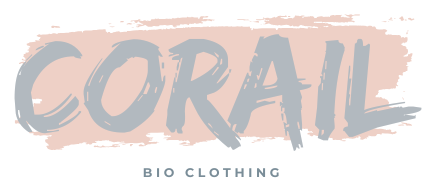
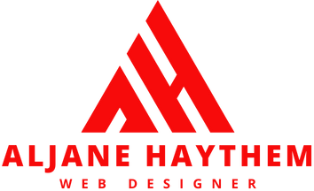
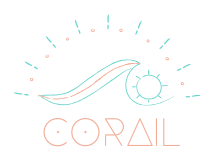
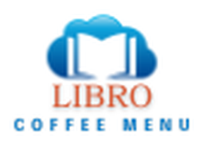
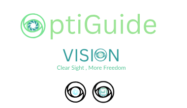

Wordmark
Corail: brush wordmark
Concept logo for a bio clothing label. Dry-brush lettering over a soft coral stroke gives the name a handmade, natural feel that suits organic fabrics.
Logo & brand identity
Logo and brand identity work: my AH personal brand mark, a two-sided business card for a recruitment agency, and concept logos for Corail (bio clothing), Libro (book café) and the Vision smart-glasses project.

My own mark: the A and the H share one stroke and rise like two peaks, in a single bold red that stays readable small. The wordmark below uses wide letter spacing for the role line.
It signs my visuals, like the product ad below, so the mark had to stay clear over photos and busy backgrounds.

In use: signature at the bottom of a product ad. See the ad
Business card for an international recruitment agency in Tunis. The front carries the brand: the gold logo over a dotted world map, with the agency's accreditation line.
The back is built for use: name and role first, then phone, web and address lines with matching icons, and a QR code. A gold curve joins the light and navy halves so both sides feel like one piece.

Concept logo for a bio clothing label. Dry-brush lettering over a soft coral stroke gives the name a handmade, natural feel that suits organic fabrics.

An alternative direction for the same brand: a fine-line wave and sun in coral and turquoise, paired with light geometric lettering.

Concept logo for a book café: a book inside a cloud, drawn as stacked and horizontal lockups so it fits both a square menu cover and a wide shop sign.

Name and logo explorations for the smart-glasses project, built around an eye and camera-lens symbol with the line "Clear Sight, More Freedom".
From a first sketch to print-ready files, with versions for web, social media and signage.